Tsuyama, Okayama: things to do, food and stays
Tsuyama · Okayama
Tsuyama
Highlighted on the Okayama map.
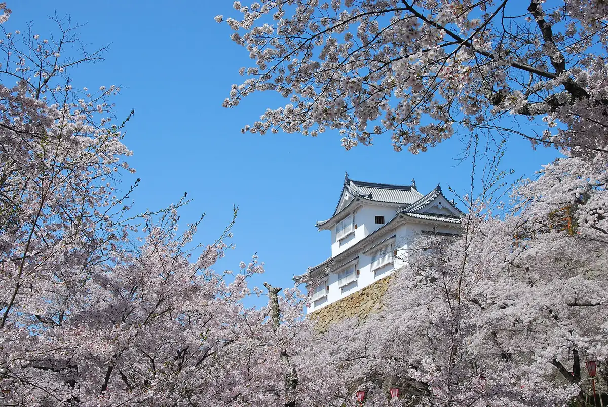
Stay
ザ・シロヤマテラス津山別邸
Za Shiroyama Terrace Tsuyama Bettei
Inn in Yamashita(Sange), Tsuyama with open-air baths and scenic views.
天然温泉 「旅人の湯」 ホテルルートイン津山駅前
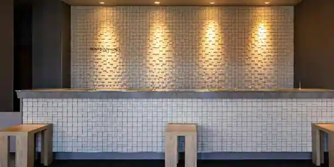
Tennen Onsen (Tabibito No Yu) Hotel Route Inn Tsuyama Ekimae
Hotel in Yokoyama, Tsuyama with a large communal bath; 2-minute walk from Tsuyama Station.
津山城東むかし町 城下小宿 糀や
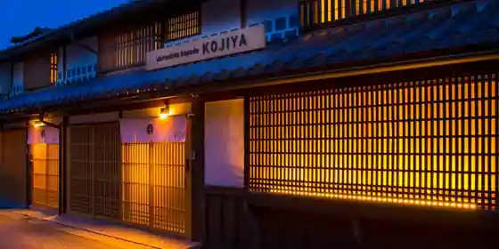
Tsuyama Joto Mukashi Machi Joka Sho Yado Koji Ya
フェアフィールド･バイ･マリオット･岡山津山
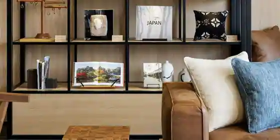
Feafirudo Feafirudo Bai Bai Mariotto Mariotto Okayama Tsuyama
美都津山庵別邸
Mito Tsuyama Iori Bettei
津山セントラルホテル-アネックス 津山城前(BBHグループ)

Tsuyama Sentoraru Hotel - Anekkusu Tsuyama Shiro Mae (BBH Gurupu)
Hotel in Ote, Tsuyama with business travelers.
津山セントラルホテル-タウンハウス 津山城前(BBHグループ)

Tsuyama Sentoraru Hotel - Town House Tsuyama Shiro Mae (BBH Gurupu)
Hotel in Ote, Tsuyama with business travelers.
城東蔵ホテルにし乃
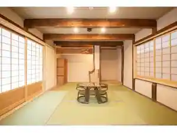
Joto Kura Hotel Nishi No
美都リストワールホテル
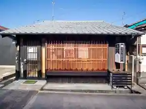
Mito Risutowaru Hotel
Hotel in Ueyuki, Tsuyama with parking.
あけぼの旅館
Akebono Ryokan
美都 津山庵
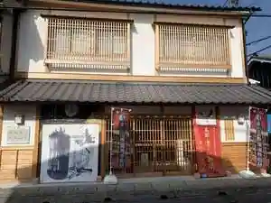
Mito Tsuyama Iori
天然温泉 ホテルルートイン津山駅前
Tennen Onsen Hotel Route Inn Tsuyama Ekimae
Dining
千恵
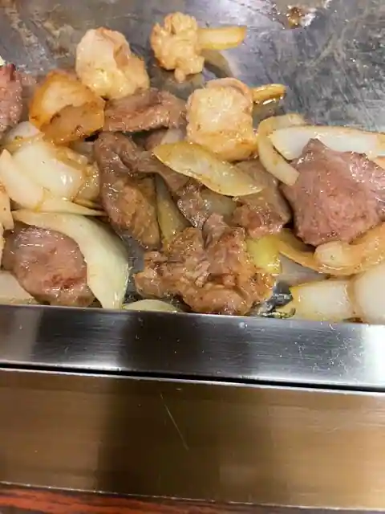
Chie
囲炉裏焼きあなみ
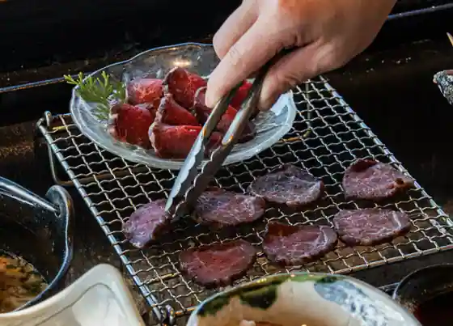
Irori Yaki Anami
麺屋 大輔
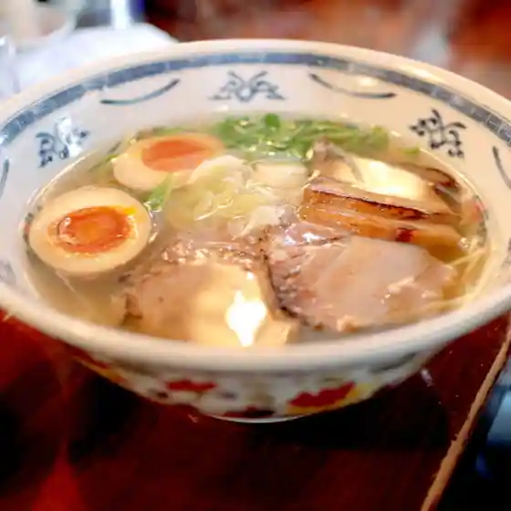
Men Ya Daisuke
豚平
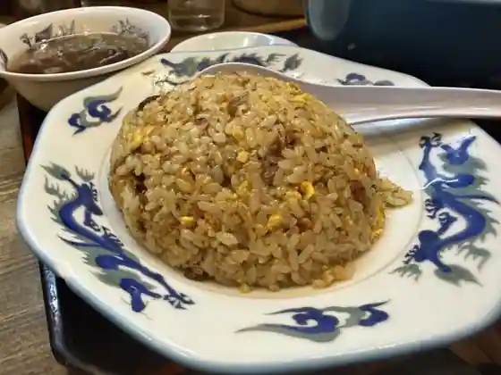
Tonpei
橋野食堂
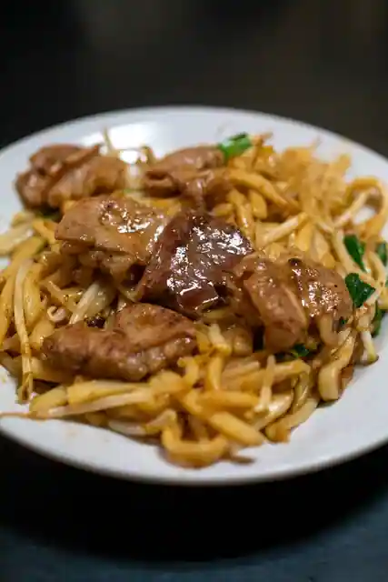
Hashino Shokudo
広島風お好み焼 くいしん坊
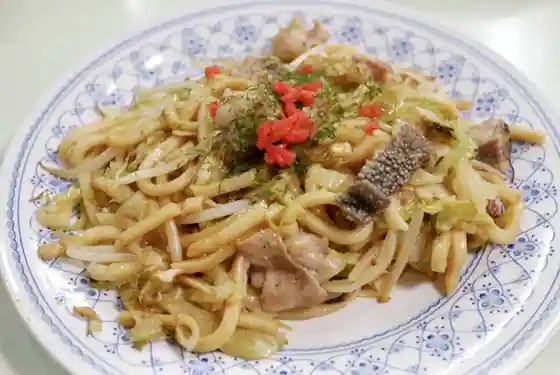
Hiroshima Kaze O Konomi Yaki Kuishin Bo
イタリアンジェラートLATTE
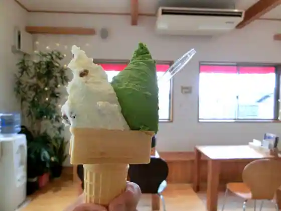
Itarianjierato LATTE
つゝや
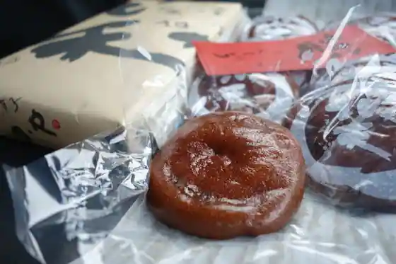
Tsu Ya
お好み焼 三枝
O Konomi Yaki Saegusa
いっぱい茶屋 東宝
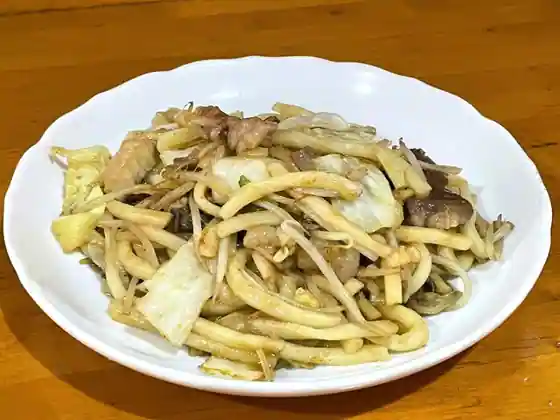
Ippai Chaya Toho
肉ハサミ屋
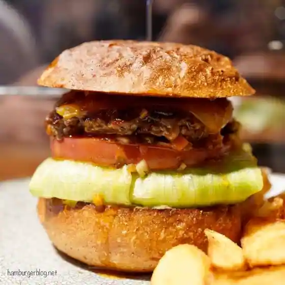
Niku Hasami Ya
津山城東とうふ茶屋 早瀬豆富店
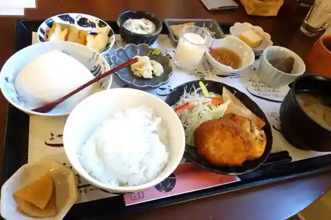
Tsuyama Joto Tofu Chaya Hayase Tofu
石川屋
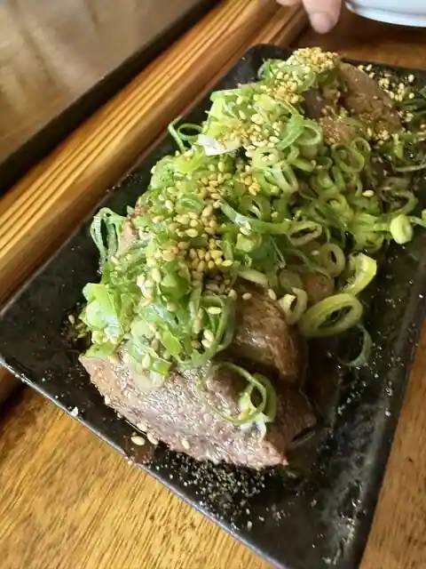
Ishikawa Ya
むぎわらぼうし
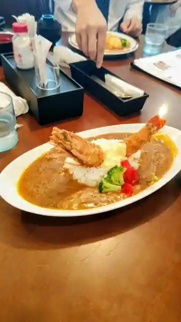
Mugiwaraboshi
リストランテ シエロ
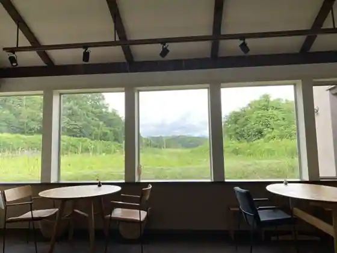
Risutorante Shiero
日進月歩
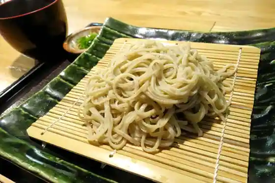
Nisshingeppo
園楽
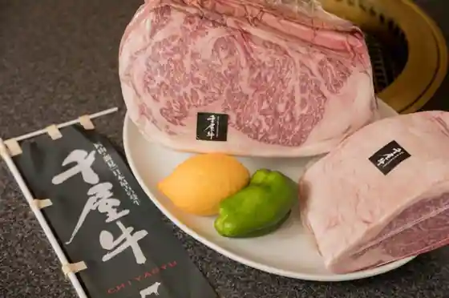
Sono Raku
おたふく
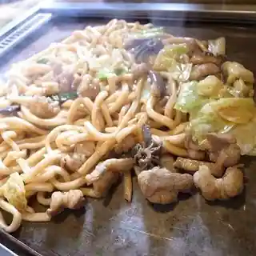
Otafuku
酒 肴 おでん 小納屋
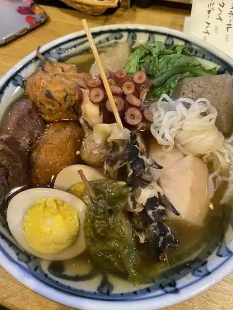
Sake Sakana Oden Sho Naya
旬菓匠 くらや 本店
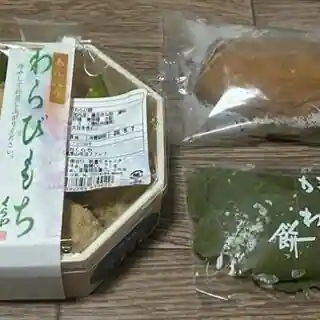
Jun Kasho Kuraya Hon
和み
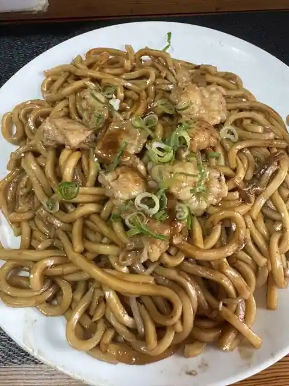
Nagomi
本格手打ちうどん かず丸
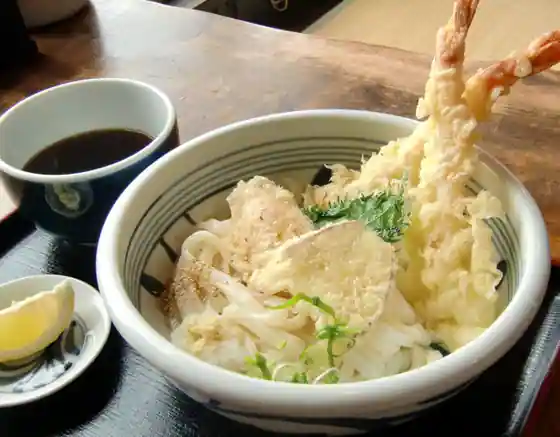
Honkaku Teuchi Chiudon Kazu Maru
LIFE 喫茶＆洋食
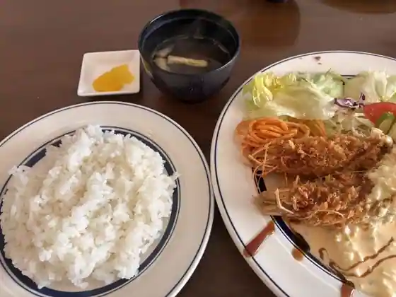
LIFE Kissa & Yoshoku
びーとん中華そば
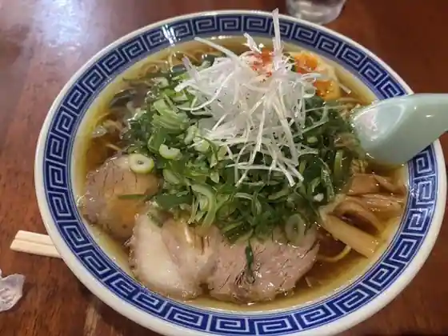
Biton Chuka Soba
Sights
Tsuyama Shiro (Tsuruyama Park)
Shu Rakuen
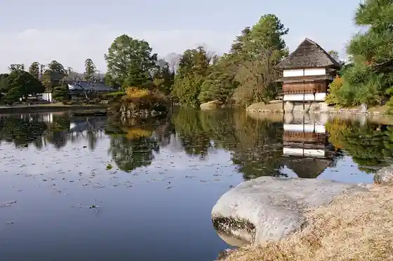
Tsuyama Yakusho
Tsuyama Manabi no Tetsudo Kan
Tsuruyama Park
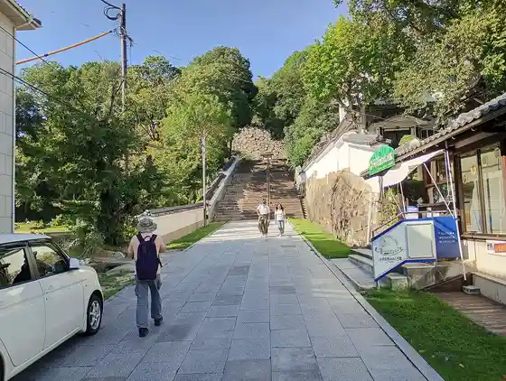